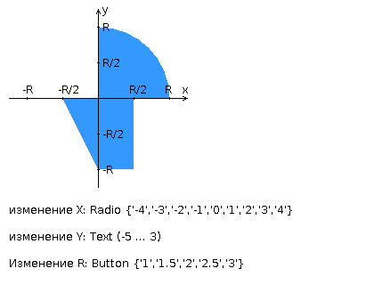

- Разработать FastCGI сервер на языке Java, определяющий
попадание точки на координатной плоскости в заданную область,
и создать HTML-страницу, которая формирует данные для отправки
их на обработку этому серверу.
- Параметр R и координаты точки должны передаваться серверу посредством HTTP-запроса.
Сервер должен выполнять валидацию данных и возвращать HTML-страницу с таблицей,
содержащей полученные параметры и результат вычислений - факт попадания или непопадания
точки в область (допускается в ответе сервера возвращать json строку, вместо html-страницы).
Предыдущие результаты должны сохраняться между запросами и отображаться в таблице.
- Кроме того, ответ должен содержать данные о текущем времени и времени работы скрипта.
-
Комментарии по выполнению ЛР:
- Требуется поднять Apache httpd веб-сервер от лица своего пользователя на гелиосе (шаблон файла
конфигурации доступен для скачивания наверху страницы)
- Веб-сервер должен заниматься обслуживанием статического контента (html, css, js) и перенаправлять
запросы
за динамическим контентом к FastCGI серверу
- FastCGI сервер требуется реализовать на языке Java (полезная библиотека в помощь в виде jar архива
доступна для скачивания наверху страницы) и поднять также на гелиосе
- Путем обращений из JavaScript к FastCGI серверу требуется показать понимание принципа AJAX
-
Разработанная HTML-страница должна удовлетворять следующим требованиям:
- Для расположения текстовых и графических элементов необходимо использовать табличную верстку.
- Данные формы должны передаваться на обработку посредством POST-запроса.
- Таблицы стилей должны располагаться в отдельных файлах.
- При работе с CSS должно быть продемонстрировано использование селекторов элементов, селекторов
классов,
селекторов идентификаторов, селекторов псевдоэлементов а также такие свойства стилей CSS, как
наследование и
каскадирование.
- HTML-страница должна иметь "шапку", содержащую ФИО студента, номер группы и новер варианта. При
оформлении
шапки необходимо явным образом задать шрифт (fantasy), его цвет и размер в каскадной таблице стилей.
- Отступы элементов ввода должны задаваться в пикселях.
- Страница должна содержать сценарий на языке JavaScript, осуществляющий валидацию значений, вводимых
пользователем в поля формы. Любые некорректные значения (например, буквы в координатах точки или
отрицательный радиус) должны блокироваться.
-
